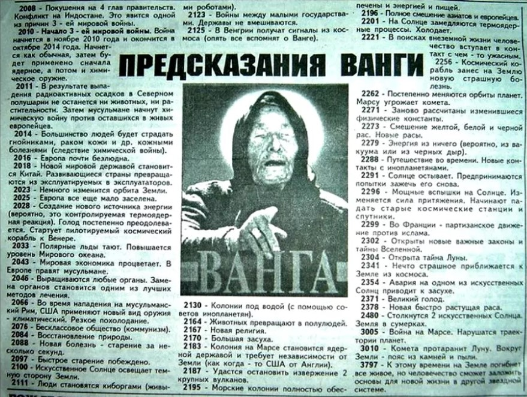

Правда о Ванге
Ва́нга, (Вангелия Пандева Гуштерова, урождённая Сурчева, по другим данным — Димитрова; 31 января 1911, Струмица, Османская империя — 11 августа 1996, София, Республика Болгария) — слепая болгарская женщина, которой приписывают дар предсказания. Большую часть жизни прожила в городе Петриче на стыке трёх границ (Болгария, Греция, Северная Македония). Последние двадцать лет принимала посетителей в селе Рупите.
Известная ясновидящая или как ее все знали Баба Ванга, обладала поистине необъяснимым даром, предсказывать события, которые происходи только спустя много лет. Ее биография одна из самых загадочных во всем мире, так как события из ее личной жизни, о которых она рассказывала, так и не нашли подтверждения в мировой истории. В современном мире имя предсказательницы вспоминается довольно часто, в связи с теми или иными происшествиями, случающимися словно по написанному ею сценарию. Поклонники Ванги постоянно находят подтверждения пророчеств, в то время как другая половина человечества до сегодняшнего дня не верит в силу дара. Полное имя Ванги звучит как Вангелия Пандева Димитрова. Она родилась на землях, сегодня принадлежащих Республике Македонии 31 января 1911 года. девочка появилась в семье крестьян Параскевы и Панде. И мать, и отец по национальности были болгарами. Так как от рождения девочка отличалась слабым здоровьем, то семья, не верящая в то, что их дочь выживет, долгое время не давали ей никакого имени. Спустя сутки после рождения Ванги ее укутали в полушубок и оставили под печью. И только через два месяца девочка впервые издала первые звуки. Этот плач послужил сигналом, что будущая провидица окрепла и точно выживет. Родители отнесли свое чадо в церковь, где при крещении ее нарекли Вангелией, что в переводе означает «приносящая благую весть».
ПРОРОЧЕСТВА И ЭКСТРАСЕНСОРИКА
О великом даре пророчества болгарской девушки, мир узнал в 1940 году. Именно тогда она впервые предсказала судьбу одному из односельчан, расшифровав его сон. Стоит отметить, что в этот момент девушка говорила мужским голосом. Со слов самой Ванги позже стало известно, что однажды она просто услышала голоса уже умерших людей, а иногда ей даже удавалось пообщаться с Богом. Примерно в этот же год близкие пророчицы впервые столкнулись с ее состоянием транса. После одного из которых девушка рассказала окружающим о том, что в 1941 году начнется Вторая мировая война. Первое время Ванга никому не рассказывала о своих видениях, так как боялась, что ее признают сумасшедшей. Однако скрывать уникальные возможности девушка долго не смогла, так как особенности заметили близкие подруги и некоторые из знакомых. Позже слава о ясновидящей разошлась по всему миру. На протяжении всей своей жизни Ванга отличалась религиозностью. Она посещала православные храмы, несмотря на тот факт, что священнослужители трактовали ее дар как колдовство. Только когда используя свой целительский дар, девушка впервые помогла людям, а ее пророчество действительно сбылось, она поверила, что получила свои умения от Бога, но никак не от дьявола. Первые предсказания Ванги имели отношения к фронтовикам – однажды девушка просто смогла показать родным местонахождение одного из мужчин и уверить их, что он вернется домой живым.

Когда это предсказание сбылось, к девушке из Болгарии стали обращаться многочисленные люди, прося у нее совета и помощи. По некоторым данным женщина в некоторые из дней принимала до ста тридцати посетителей. Предсказание ясновидящей делались при помощи кусочков рафинированного сахара. Прежде чем прийти с ним к провидице, необходимо было проспать на нем целую ночь. Впоследствии была подведена статистика, по которой стало понятным, что к провидице люди принесли около двух тонн рафинада. Это в свою очередь стало свидетельством того, что Ванга смогла помочь огромному количеству людей. В 1967 году Вангу приняли на государственную службу, назначив ей официальную зарплату, которую она получала за свои предсказания. Стоит отметить, что до этого момента женщина проводила сеансы абсолютно бесплатно. К этому времени среди ее «клиентов» стали появляться политики и звезды искусства, которые хотели знать не только свою судьбу, но и судьбу своей страны. Среди постоянных гостей болгарской девушки был царь ее родной страны Симеон Второй, а также один из коммунистических лидеров Тодор Живков. Если говорить о представителях Советского Союза, то здесь непременно нужно вспомнить писателей Юрия Семенова и Леонида Леонова, а также президент Российской Федерации Бориса Ельцина. До последних своих дней Ванга была глубоко верующий и призывала всех верить в Бога, а также быть мудрее и добрее к окружающим.